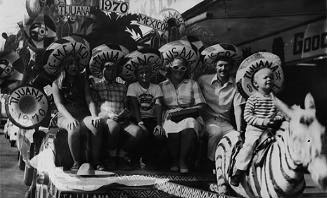

|  | Growing Up in Las Vegasa few recollections from Sheldon Rampton | |
| The family together on a vacation trip to Tijuana. From left to right: sister Debbie, myself, brother Dale, mother Renee, father Roger, and brother Kenny (seated on the donkey). |
Perhaps the best way to summarize the relationship between my parents is to tell the story of an incident that occurred sometime in my early teens. I had broken some household rule, and my mother was angry enough about it to threaten physical punishment. By then, however, I was old enough and strong to hit back, and I told her as much. "All right," she said, "I'll let your father take care of you when he gets home. If you think a spanking from me is bad, wait until he gets his hands on you."
By the time my father arrived, Mom had had a few hours to build up a head of anger, and she made sure that he got an earful. "Come here," he said, giving me a stern glare. He led me into the garage, shut the door, and undid his belt.
By this time I was shaking. He took the belt, doubled it over, and flexed it in his hands. Then he gave me a broad conspiratorial wink and whispered, "When I snap the belt, scream real loud."
He knew just how to snap the belt by pulling at both ends so that the folded-over parts of the belt slapped against each other, making a cracking noise that sounded just like what you would hear if I was actually being whipped. Each time he did, I let out a loud yell. After a few minutes of this charade, we returned to the house, doing our best to keep from smirking.
Years later I told my mother what really happened that day, and she got mad all over again. "That's what I dealt with from him all the time," she said. "He never backed me up -- not with discipline, not with money, not with anything. I was always the one who had to play the heavy, and he got to look like the good guy, because he never worried about taking care of business."
Maybe that explains why my childhood memories of my father are so much warmer than my memories of my mother. I remember him showing us how to ride horses, shopping for trinkets in Tijuana, or taking us to rides at Disneyland or Sea World. Often these theme parks hired small bands to provide free entertainment at strategic locations. We would stop and listen, and after some badgering Dad would agree to ask if they would let him "sit in" for a few numbers. It seemed that there was no style he couldn't play--classical, jazz, rock, Latin American folk music.